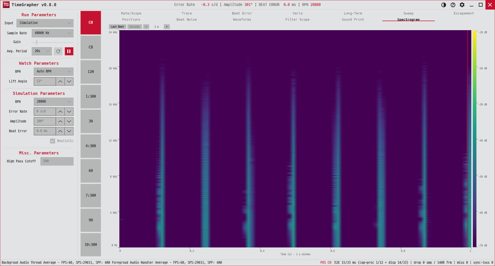

14. Spectrogram
소리를 시간-주파수 이미지로 펼쳐, 시계가 어떤 주파수 성분을 내는지 실시간으로 봅니다.
Spreads the sound into a time–frequency image to see, in real time, which frequency components the watch produces.
Expande o som em uma imagem tempo–frequência para ver, em tempo real, quais componentes de frequência o relógio produz.

용도 · Purpose · Finalidade
충격음의 주파수 구성을 봅니다. 박자의 기본 주파수와 배음이 또렷한지, 잡음이 어디에 퍼져 있는지 파악할 수 있습니다.
Reveals the frequency makeup of the impulses — whether the beat's fundamental and harmonics are crisp, and where noise spreads.
Revela a composição de frequência dos impulsos — se a fundamental e os harmônicos da batida estão nítidos e onde o ruído se espalha.
무엇이 보이나 · What's shown · O que é exibido
- 가로(X)HorizontalHorizontal
- 시간 창. 오실로스코프처럼 왼→오로 쓸어가며 갱신.A time window, painted left→right like an oscilloscope sweep.Uma janela de tempo, pintada da esquerda para a direita como uma varredura de osciloscópio.
- 세로(Y)VerticalVertical
- 주파수(STFT 빈, 위가 높은 주파수).Frequency (STFT bins, higher at the top).Frequência (bins STFT, mais alta no topo).
- 색ColourCor
- dB 세기. 오른쪽 컬러바가 위=강, 아래=바닥.dB level; the right colourbar runs peak (top) to floor (bottom).Nível em dB; a barra de cores à direita vai do pico (topo) ao piso (base).
- 빨간 세로선Red lineLinha vermelha
- 현재 스윕 위치(Seconds 모드에서만).Live sweep head (Seconds mode only).Cabeça da varredura ao vivo (somente no modo Seconds).
옵션 · Options · Opções
- Last Beat — 창을 한 비트 길이로 고정(BPH 기준, 모르면 0.125초). A 온셋에 위상 고정되어 비트가 가운데 머뭅니다.Last Beat — fixes the window to one beat period (from BPH, else 0.125 s), phase-locked to the latest A onset so the beat stays centred.Last Beat — fixa a janela em um período de batida (a partir do BPH, senão 0,125 s), com fase travada no onset A mais recente para que a batida permaneça centralizada.
- Compare Beats — 최근 여러 비트(2·4·8개)를 위상 정렬해 각 비트를 자기 칸 가운데에 놓고, 칸 사이마다 구분선을 그립니다. 2개면 한 비트를 다음 비트와 직접 비교하고, 더 늘리면 같은 주파수 대역에서 반복되는 에너지 구조가 칸마다 되풀이되는 것을 봅니다. −/+ 또는 휠로 개수를 바꿉니다.Compare Beats — lays the last few beats (2 · 4 · 8) side by side, phase-aligned with each beat centred in its own cell and a divider between cells. Two beats compare one beat directly with the next; more beats reveal the recurring energy structure repeating cell to cell at the same frequency bands. Step the count with −/+ or the wheel.Compare Beats — dispõe as últimas batidas (2 · 4 · 8) lado a lado, alinhadas em fase, com cada batida centralizada em sua própria célula e um divisor entre as células. Duas batidas comparam uma batida diretamente com a seguinte; mais batidas revelam a estrutura de energia recorrente que se repete de célula em célula nas mesmas bandas de frequência. Ajuste a quantidade com −/+ ou com a roda do mouse.
- Seconds — 창을 고정 초(0.1–10초)로. 위상 고정 없이 라이브 스윕이 흐릅니다.Seconds — a fixed number of seconds (0.1–10 s); no phase lock, live sweep flows.Seconds — um número fixo de segundos (0,1–10 s); sem trava de fase, a varredura flui ao vivo.
- 아래 시간축 라벨과 캡션(
Time (s) · 1.0 s window또는Time (ms) · last beat)이 현재 창을 알려 줍니다.The time-axis labels and caption (Time (s) · 1.0 s windoworTime (ms) · last beat) report the current window.Os rótulos do eixo de tempo e a legenda (Time (s) · 1.0 s windowouTime (ms) · last beat) informam a janela atual.
읽는 법 · How to read · Como ler
- 밝은 세로 띠 = 그 시점의 주된 주파수(박자 기본음 + 배음).Bright vertical bands = dominant frequencies at that instant (beat fundamental + harmonics).Bandas verticais brilhantes = frequências dominantes naquele instante (fundamental da batida + harmônicos).
- 흐릿한 저-dB 영역 = 잡음 바닥. 넓게 밝으면 잡음이 많은 환경.Diffuse low-dB area = noise floor; broadly bright = a noisy environment.Área difusa de baixo dB = piso de ruído; amplamente brilhante = um ambiente ruidoso.
- Last Beat로 한 비트의 충격 구조를 보고, Compare Beats로 비트끼리 나란히 비교하며, Seconds로 흐름을 봅니다.Use Last Beat to freeze one impulse, Compare Beats to compare beats side by side, and Seconds to watch the flow.Use Last Beat para congelar um impulso, Compare Beats para comparar batidas lado a lado e Seconds para observar o fluxo.